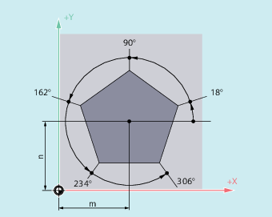

Fahrbefehle mit Polarkoordinaten sind dann sinnvoll, wenn die Bemaßung eines Werkstücks oder eines Teils eines Werkstücks von einem zentralen Punkt ausgeht und die Maße mit Winkeln und Radien angegeben sind (z. B. bei Bohrbildern).

| Befehl zum Einschalten der Eilgangbewegung | |
| Befehl zum Einschalten der Geradeninterpolation | |
| Befehl zum Einschalten der Kreisinterpolation im Uhrzeigersinn | |
| Befehl zum Einschalten der Kreisinterpolation gegen den Uhrzeigersinn | |
| Polarwinkel Winkel zwischen dem Polarradius und der waagrechten Achse der Arbeitsebene (z. B. X-Achse bei | |
Wertebereich: | ± 0…360° | |
Die Winkelangabe kann sowohl absolut als auch inkrementell erfolgen: | ||
| Absolutmaßeingabe | |
| Kettenmaßeingabe Bei Kettenmaßeingabe gilt der zuletzt programmierte Winkel als Bezug. | |
Der Polarwinkel bleibt solange gespeichert, bis ein neuer Pol definiert oder die Arbeitsebene gewechselt wird. | ||
| Polarradius Die Angabe erfolgt immer in absoluten positiven Werten in [mm] oder [inch]. Der Polarradius bleibt bis zur Eingabe eines neuen Werts gespeichert. | |
| Hinweis |
Die Polarkoordinaten beziehen sich auf den mit |
| Hinweis |
Die senkrecht zur Arbeitsebene stehende 3. Geometrieachse kann zusätzlich als kartesische Koordinate angegeben werden (siehe folgendes Bild). Damit sind räumliche Angaben in Zylinderkoordinaten programmierbar. Beispiel: |
In NC-Sätzen mit polaren Endpunktangaben dürfen für die angewählte Arbeitsebene keine kartesischen Koordinaten wie Interpolationsparameter, Achsadressen, usw. programmiert werden.
Wenn mit G110 ... G112 kein Pol definiert wird, dann wird automatisch der Nullpunkt des aktuellen Werkstückkoordinatensystems als Pol betrachtet:
Polarradius RP = 0
Der Polarradius errechnet sich aus dem Abstand zwischen Startpunktvektor in der Polebene und dem aktiven Polvektor. Anschließend wird der errechnete Polarradius modal gespeichert.
Das gilt unabhängig von einer gewählten Poldefinition (G110 ... G112). Sind beide Punkte identisch programmiert, so wird dieser Radius = 0 und der Alarm 14095 generiert.
Nur Polarwinkel AP ist programmiert
Wenn im aktuellen Satz kein Polarradius RP, aber ein Polarwinkel AP programmiert ist, dann wird bei einer Differenz zwischen aktueller Position und Pol in Werkstückkoordinaten diese Differenz als Polarradius genutzt und modal gespeichert. Ist die Differenz = 0, werden erneut die Polkoordinaten vorgegeben und der modale Polarradius bleibt auf Null.
Die Positionen der Bohrungen sind in Polarkoordinaten angegeben. Jede Bohrung wird mit dem gleichen Fertigungsablauf hergestellt: Vorbohren, Bohren auf Maß, Reiben …
Die Bearbeitungsfolge ist im Unterprogramm abgelegt.
| Programmcode | Kommentar |
|---|---|
| N10 G17 G54 | ; Arbeitsebene X/Y, Werkstücknullpunkt. |
| N20 G111 X43 Y38 | ; Festlegung des Pols. |
| N30 G0 RP=30 AP=18 Z5 | ; Startpunkt anfahren, Angabe in Zylinderkoordinaten. |
| N40 L10 | ; Unterprogramm-Aufruf. |
| N50 G91 AP=72 | ; Nächste Position im Eilgang anfahren, Polarwinkel im Kettenmaß, Polarradius von Satz N30 bleibt gespeichert und muss nicht angeben werden. |
| N60 L10 | ; Unterprogramm-Aufruf. |
| N70 AP=IC(72) | . |
| N80 L10 | … |
| N90 AP=IC(72) | |
| N100 L10 | … |
| N110 AP=IC(72) | |
| N120 L10 | … |
| N130 G0 X300 Y200 Z100 M30 | ; Werkzeug freifahren, Programmende. |
Siehe auch:
Kreisinterpolation: Einleitung und Übersicht
Polarkoordinaten